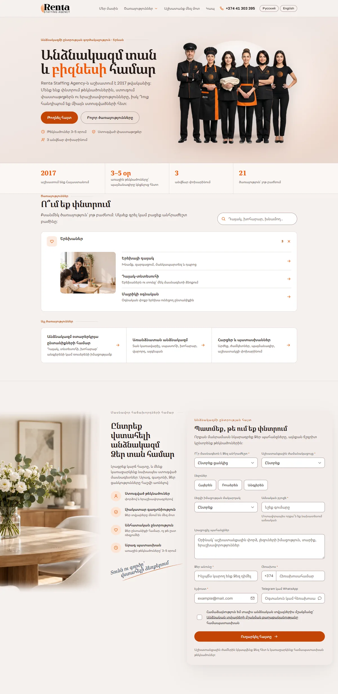
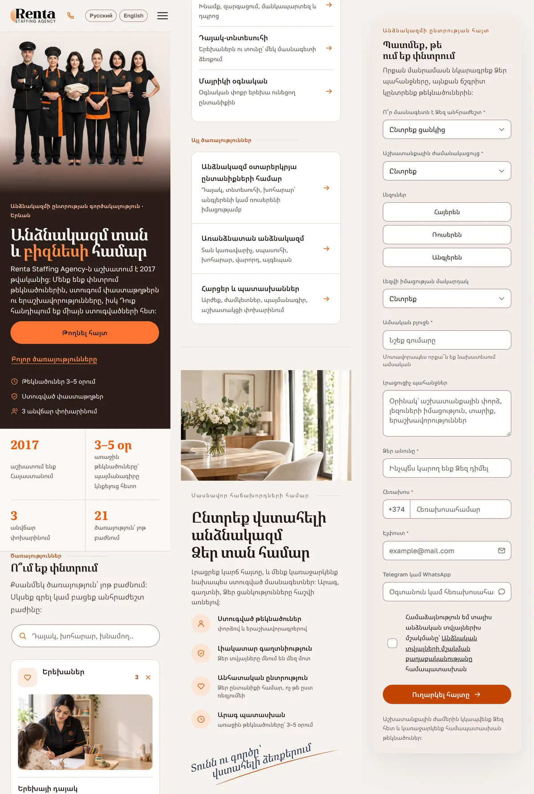
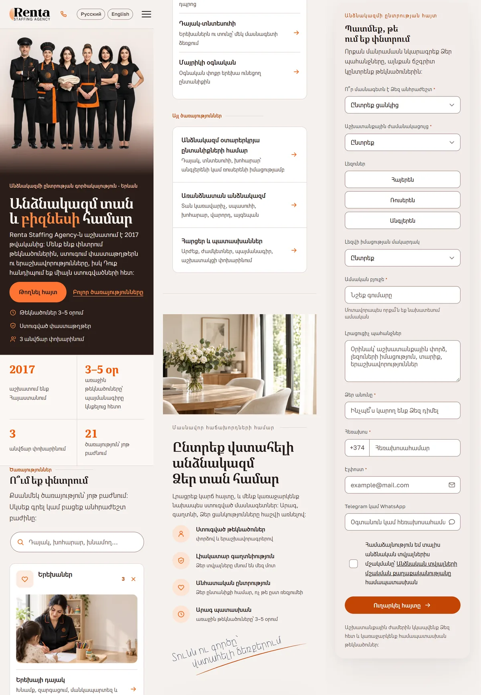
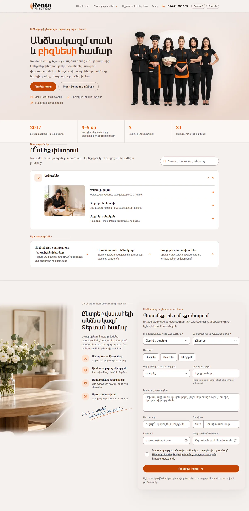
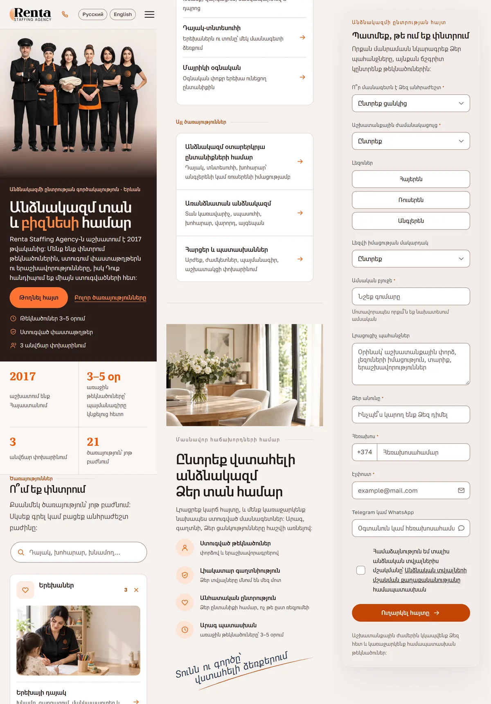
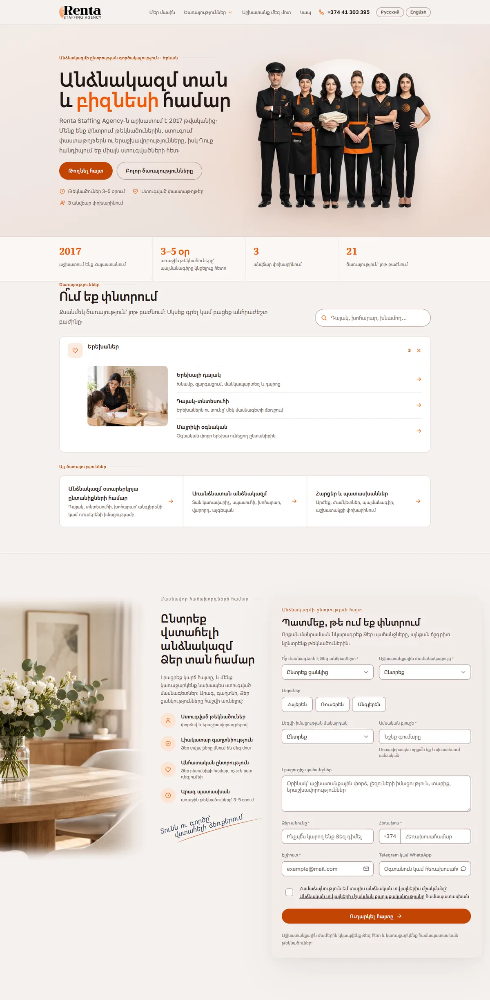
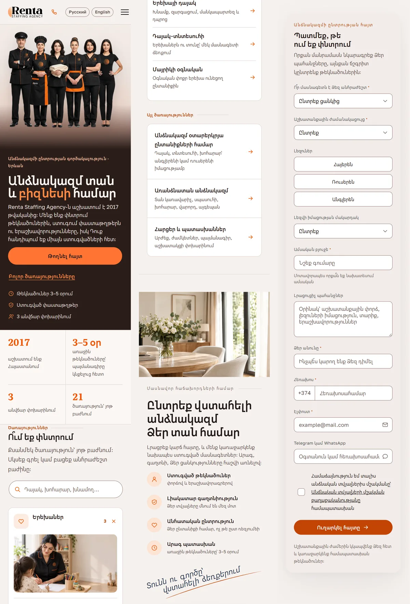
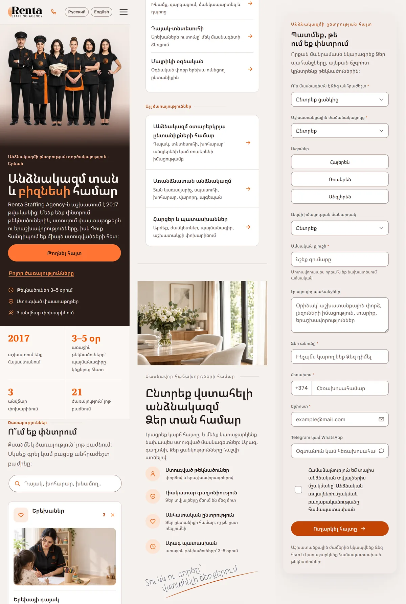

Шрифты для армянской версии
Одни и те же блоки главной в восьми вариантах. Латинские буквы и цифры везде прежние — меняются только армянские. Назовите номер варианта.
Вариант 0
Сейчас на сайте: Noto Serif Armenian (заголовки) · Noto Sans Armenian (текст) · подпись — Noto Serif Armenian с наклоном, сделанным браузером


Вариант 1
Noto Serif Armenian (заголовки) · Noto Sans Armenian (текст) · подпись — First Time Writing (рукописный)
Вариант 2
Noto Serif Armenian (заголовки) · Mardoto (текст) · подпись — First Time Writing (рукописный)

Вариант 3
Noto Serif Armenian (заголовки) · Google Sans (текст) · подпись — First Time Writing (рукописный)
Вариант 4
Mardoto (заголовки и текст) · подпись — Mardoto Italic (настоящий курсив)


Вариант 5
Google Sans (заголовки и текст) · подпись — Google Sans Italic (настоящий курсив)


Вариант 6
Noto Sans Armenian (заголовки и текст) · подпись — First Time Writing (рукописный)

Вариант 7
Webstart Bold (заголовки) · Noto Sans Armenian (текст) · подпись — First Time Writing (рукописный)